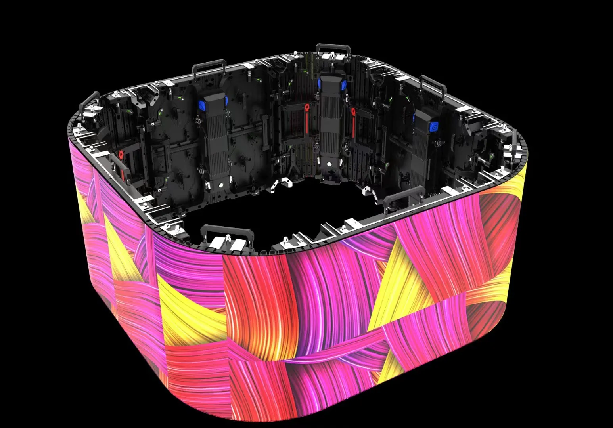
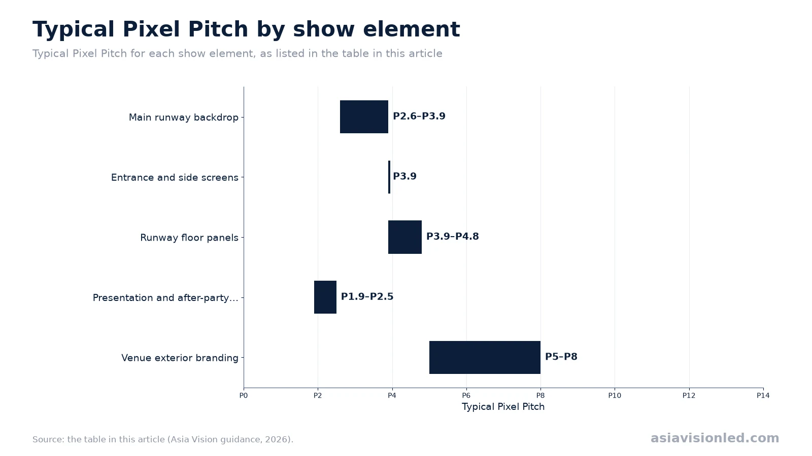
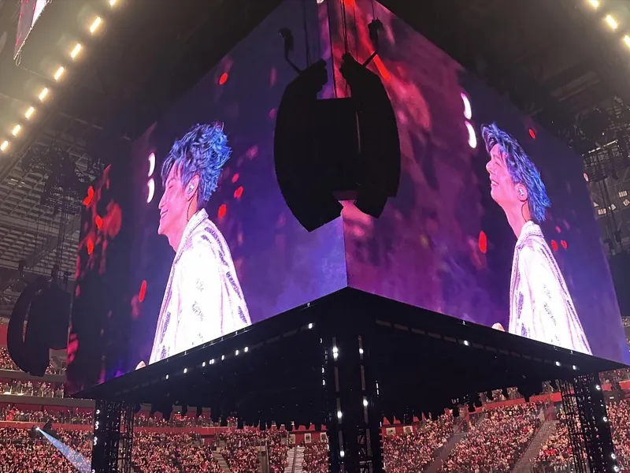

A runway show is judged in minutes and photographed from every angle, which makes the video wall part of the collection itself. LED has become the standard tool for that backdrop because a designer can set a different world for each look without rebuilding a physical set between shows.
The requirements are unusually specific. The screen appears in press photography and broadcast, it sits behind moving models lit by strong stage lighting, and it is often installed and struck inside a single day. This guide covers what that combination demands from a fashion-show video wall, the runway backdrop and the rental kit — not wearable LEDs.
Fashion presentation has moved toward digital backdrops. Where a show once relied on printed panels, projection or a plain white cyclorama, an LED video wall is now the default because it offers high brightness, deep blacks and a change of scene in a compact package. A designer can open on a stark monochrome set and close on a saturated colour field within the same show.
The first driver is photography. Runway imagery is distributed within minutes and lives for years, so the backdrop must look correct on camera, not merely acceptable to the audience in the room. That places flicker, refresh rate and colour accuracy at the centre of the specification, often ahead of raw pixel density. See the camera flicker guide for how refresh and shutter interact.
The second driver is schedule. Fashion calendars are compressed, venues are shared, and load-in windows are short. A rental LED system that assembles quickly, aligns cleanly and strikes without damage is worth more than a marginally finer pitch, because the show cannot wait for the screen to be built. The stage LED rental guide covers the same touring constraints from the rental-crew side.
The third driver is creative range. Designers increasingly use the runway floor as well as the wall, turning the catwalk itself into a moving image surface. That is a different product from a wall cabinet: floor-rated panels need a load-bearing, anti-slip face. A dedicated floor series is not listed on the current product pages, so confirm the product and the load rating on the quotation rather than laying a wall cabinet flat.
Front-of-house and back-of-house needs differ as much as wall and floor. The press area, the hair and makeup room, and the check-in desk all benefit from screens that show schedules and looks to a small audience at close range, and these can often be handled by the same rental fleet that builds the main backdrop.
Colour direction is a creative decision with a technical consequence. A designer's palette must survive the wall's rendering and the stage lighting without shifting, which is why a test of the actual content on the actual screen is worth more than any specification sheet. Rehearse transitions on the built wall too, so a change of look does not flash or drop to a black frame. Confirm content rights and the delivery format in advance, and, for tents or outdoor shows, confirm cabinet protection and a stable power plan.
Figure 1 shows an indoor LED installation.

Runway projects usually combine three surfaces: the main backdrop wall, side or entrance screens, and sometimes the floor. Each is viewed under stage lighting from different angles, and each has a different tolerance for pitch, weight and setup speed. For touring and multi-show seasons, prioritise the rental cabinet system and its rigging accessories over the finest pitch available.
The table below maps common show elements to typical pitch bands — the same bands as in the chart that follows — and to Asia Vision series whose published specifications can support that role. Where a figure is not on the product page, it is not stated here.
| Show element | Typical pitch band | Published series to start with |
|---|---|---|
| Main runway backdrop | P2.6 to P3.9 | X Series (cabinet sizes 500×500 mm, 250 mm and 1000×500 mm; SMD pitches include P2.6 / P2.97 / P3.91, GOB selectable) or COB Z (500×500 mm, ≥7680 Hz, P1.95 / P2.6, ±5° curve) |
| Entrance and side screens | Around P3.9 | X Series, E-PRO or S Series (rental cabinets at 500×500 mm and 500×1000 mm; indoor and outdoor options) |
| Runway floor panels | P3.9 to P4.8 is a common planning band | Specify a load-bearing, anti-slip floor-rated panel; confirm the product on quotation — no floor series is listed on the current product pages |
| Presentation and after-party wall | Close-range, finer than a show backdrop | COB CV-PRO (published pitches P0.9375 / P1.25 / P1.5625 / P1.875, refresh ≥3840 Hz) |
| Venue exterior branding | Coarser outdoor pitches | D-PRO (outdoor fixed SMD, P5 / P5.7 / P6.67 / P8 / P10, brightness up to 10,000 cd/m², front maintenance) |
Figure 2 plots typical pixel-pitch bands for each show element. The chart is a planning guide; published series pitches are listed in the text below and may differ from a band in the chart.

Figure 3 shows an indoor LED installation.

Service access should be confirmed against the venue. A backdrop is often only reachable from the front once the set is built behind it, so cabinets with front service — the X Series is published as front-maintenance, with front or rear installation — are strongly preferred. Confirm that the control hardware also sits where a technician can reach it during a changeover without walking onto the runway. Render content at the wall's native pixel count, and keep important elements off the cabinet seams.
Camera performance is central to runway work. Do not assume a refresh figure that is not on the product page. COB Z publishes ≥7680 Hz, which is the series to start with when the wall will be shot tightly. E-PRO is described for XR and concerts with an emphasis on refresh and colour accuracy, but the product page does not publish a hertz figure — confirm it on the quotation and test with the show cameras. The same applies to the X Series and S Series.
Mechanical precision protects the look of the show. Cabinets that align tightly produce a seamless surface, and a deep black level helps dark scenes read as black rather than lifting to grey under stage lights. Curved or cornered backdrops can use COB Z's published ±5° curve and right-angle splicing, or see the curved and flexible LED guide.
For a permanent brand showroom or in-house presentation space, COB CV-PRO is the published indoor fine-pitch path, with ≥3840 Hz and 800 cd/m². Across the range, Asia Vision supplies documentation covering CE, FCC and RoHS, standard delivery is 18 days, and LED display systems are warranted for three years. Tell us the venue, the load-in window and whether the wall will be photographed, and we will map a backdrop, side screens and, if needed, a floor or outdoor branding wall to published series.
For a fashion-show video wall, start with the rental cabinet systems: the X Series, COB Z (≥7680 Hz, curved builds), E-PRO and S Series. For a close-range presentation or showroom wall, see COB CV-PRO. For permanent outdoor branding, see D-PRO.